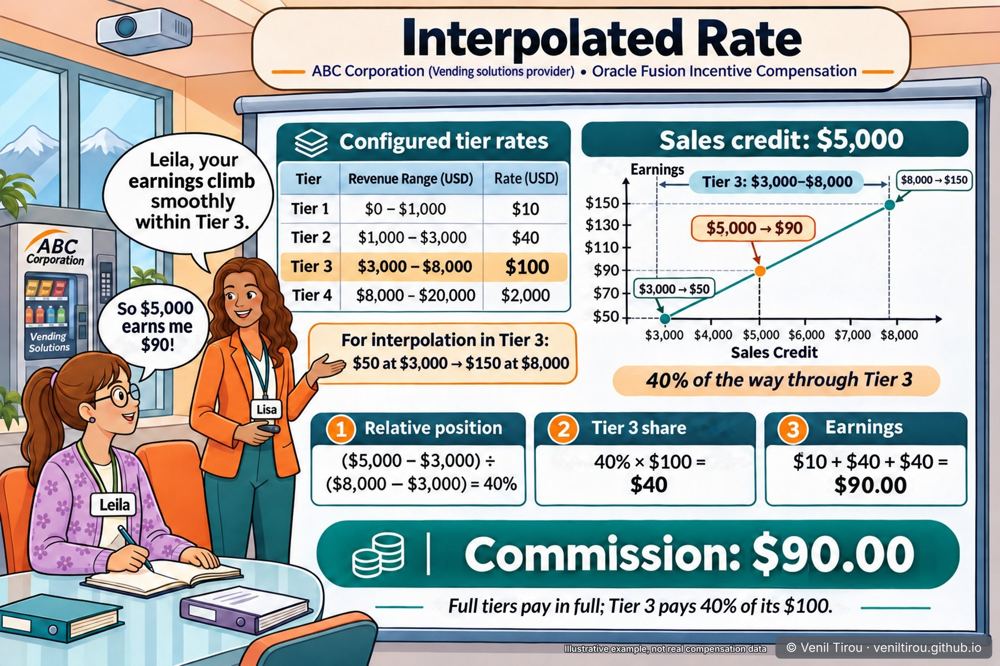

Why $5,000 Pays $90 — The Interpolated Rate
A Quick Take is a one-scene chapter: one picture, then the working. Leila's plan is about to gain a tiered component, and her $5,000 of credit lands in Tier 3, the tier that pays $100. So why does it pay her $90? Because with an interpolated rate, the tiers below pay in full and the tier you're in pays only its share. For how a flat rate pays, read From Order to Earnings.
👥 Characters in This Chapter
Lisa (ORANGE blazer) — Compensation Analyst at ABC Corporation; she works through the rate table on the projectorLeila (FLORAL cardigan, glasses) — junior sales rep asking what her $5,000 of credit will earn
📱 On mobile? Pinch to zoom to read the numbers clearly.
The Scene — $5,000 Lands in Tier 3

The Working, Tier by Tier
Oracle's formula for the tier you're in: credit in the tier ÷ (the tier's upper bound − its lower bound) × the tier's amount. Every full tier below adds its whole amount.
| Tier | Range (credit) | Tier pays in full | Credit in this tier | Share of tier | Pays |
|---|---|---|---|---|---|
| 1 | $0 – $1,000 | $10 | $1,000 | 100% | $10 |
| 2 | $1,000 – $3,000 | $40 | $2,000 | 100% | $40 |
| 3 | $3,000 – $8,000 | $100 | $2,000 | 40% | $40 |
| 4 | $8,000 – $20,000 | $2,000 | $0 | 0% | $0 |
| Total | $5,000 | $90 |
Split or Not: Same Table, Different Pay
The split is a setting, not arithmetic. Here's the same table with and without it, including two amounts either side of the Tier 3 boundary (those two columns are my arithmetic).
| Split option (Oracle’s words) | What it does | $2,999 | $3,001 | $5,000 |
|---|---|---|---|---|
| Rate not split (flat commission) | One rate: the highest tier reached | $40 | $100 | $100 |
| Rate split, varied (interpolated, proportional) | Full tiers pay in full; the current tier pays its share | $49.98 | $50.02 | $90 |
Without the split, $2 more credit at the boundary pays $60 more. With it, the line has no jump. Oracle offers two more options: a step rate (fixed, nonproportional), shown in Oracle's examples with a percent table, and proportional with the first tier as a threshold, where the first tier must be met before any rate applies.
Where It's Set Up in OFIC
| # | Where | Setting |
|---|---|---|
| 1 | Compensation Plans work area: rate dimension | Amount tiers: 0–1,000, 1,000–3,000, 3,000–8,000, 8,000–20,000 |
| 2 | Rate table | Type Amount, rates 10, 40, 100 and 2,000. Oracle: for the interpolated option, “typically … the rate is an amount” |
| 3 | Plan component: Add Rate Table step | An input expression for the rate dimension (the credit amount), then the split attainment across tiers option: rate split, varied (interpolated). The split applies to one dimension only |
| 4 | Incentive formula: earnings expression | Includes Rate Table Result, so earnings come from the table |
| 5 | Optional: Manage Incentive Profile Values | Split Rates Detail Enabled = Y stores the input and rate applied at each tier (from release 24B). It adds load to calculation, so turn it on only when needed |
One More Thing — When You Calculate Changes the Total
With a flat rate, like the 10% in When the Cash Arrives, calculating each payment or the whole period gives the same total. With tiers it doesn't, because the tier depends on how much credit is looked up at once. Oracle's example runs six transactions from January to March, $9,700 in all, through this same table:
| How the same quarter is calculated | Earnings |
|---|---|
| Each transaction on its own (per event) | $149 |
| Grouped by month (per interval) | $164 |
| Grouped by quarter (my arithmetic, using Oracle’s formula) | $433.33 |
One transaction at a time, most deals stay in the low tiers. Grouped by month, more credit reaches Tier 2 and Tier 3. Grouped by quarter, $9,700 reaches Tier 4. A measure processed one transaction at a time can also use a running total, which changes the tier again; Oracle's $149 example doesn't use one. Decide how the plan calculates when you build the rate table, not after the first payout.
Sources (Oracle): Examples of Calculating Earnings Using Interpolated Rates, Options for Splitting Attainment Numbers Across Rate Tiers, Considerations for Adding Rate Tables to Plan Components, Considerations for Rate Tables, Options for Calculating Incentives, Options for Using Individual or Grouped Transactions in Attainment Calculations, Report Split Rates in Calculation (24B).
Why This Chapter Matters
The takeaway: a tiered rate table answers two questions, not one: which tiers there are, and how credit is split across them. With an interpolated rate, the tiers below pay in full and the current tier pays its share, so $5,000 pays $90, not Tier 3's $100.
The split is what makes earnings climb smoothly instead of jumping at each boundary, where $2 of extra credit could otherwise be worth $60. And with tiers, whether the plan calculates each transaction, each month or each quarter changes the total. The lesson for sales ops: choose the split option and the calculation interval together, and show reps the working before the quarter starts.
Concepts Covered
| Concept | What it means | Where |
|---|---|---|
| Rate table: Amount or Percent | An Amount table pays the rate as a number; a Percent table multiplies by it. Interpolation usually uses an Amount table. | Setup |
| Rate dimension and tiers | The ranges a rate table looks up, from and to values per tier. | Scene, Working |
| Split attainment across tiers | The plan component option that decides whether credit is split across tiers, and how. | Options, Setup |
| Interpolated (proportional) rate | Full tiers pay in full; the tier you are in pays its share of its amount. | Scene, Working |
| Rate not split (flat) | One rate from the highest tier reached, which creates a jump at each tier boundary. | Options |
| Rate Table Result | The attribute the earnings expression uses to pay from the rate table. | Setup |
| Per event or per interval | Calculating each transaction on its own, or the period’s total, changes which tiers are reached. | One more thing |
| Split Rates Detail Enabled | A profile option that stores how much of the input fell in each tier, and the rate applied. | Setup |